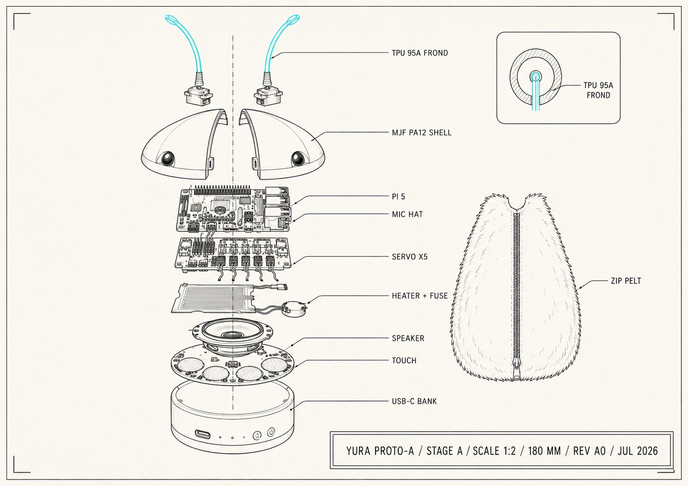

Yura · prototype plan · July 2026
The Phase 0 puppet is dropped — there's a Moflin in the house setting the alive-ness bar already. Instead: a works-like prototype for ~$425–750 all-in, chassis ordered from an online print service, everything else off-the-shelf dev boards. Three stages, each with a kill-or-continue gate.
01 · Why this path
A printed chassis with hobby boards can test almost everything the business case rests on: the frond language, glow-as-emotion, warmth + purr + breathing as presence, and the whole "comprehends but never speaks" loop. What it cannot prove is manufacturability or COGS — that's Phase 3's problem, gated behind this one.
One discipline carried over from the old Phase 0: the founder liking it doesn't count. Every stage gate below is judged with someone who isn't Samuel in the room, with the Moflin available for direct comparison. If Yura can't beat a $429 stationary fur ball at feeling alive, that's a kill signal worth $400, not $4 M.
02 · Stages
Gate: side-by-side with the Moflin, fronds + glow + warmth + purr read as a living creature — to someone who isn't Samuel.
Printed shell under hand-sewn fur; fronds, glow, warmth, purr, breathing, touch, driven by a Raspberry Pi 5. Mood states react to touch and sound direction. This alone is a Moflin-class object plus the frond channel — comparable on day one.
Warmth comes from the Pi, not a heater. The Pi 5 dissipates 10–12 W under Whisper — the same order as the heater film it was going to sit beside — so the cooler's exhaust is ducted to a belly plate instead of being fought. That deletes the build's only genuinely dangerous subsystem, along with the ADC, the MOSFET and the thermal fuse. The trade: Pi heat tracks CPU load, not mood, so Stage A tests warmth as a baseline rather than as an expressive channel.
Fronds are root-mounted 2-axis gimbals on sub-micro servos — two per frond, because one servo cannot drive two axes. Sub-micro over MG90S is a fit decision: roughly a quarter the volume and mass at the highest point of a 680 g creature, and quieter, which the gate cares about. Tendon-driving the fronds from the body cavity is very likely the production answer — it fixes head volume, centre of gravity and noise together — but root-mount is far easier to debug on a first build, and Stage A tests aliveness, not manufacturability.
Trigger: passive warmth doesn't read as alive at the Stage A gate — or warmth needs to become expressive rather than constant. Then the gate: the belly holds a steady, skin-safe temperature under fur, with the thermal fuse never being the thing that saves it.
Heater film, ADS1115, NTC, logic-level MOSFET and a 60 °C one-shot fuse. Worth keeping on the table rather than deleting: Moflin's specs list a temperature sensor, with no sign it produces heat — so warmth is one of the few channels where Yura wins outright rather than matching. Print order #1 reserves a flat cavity behind the belly plate, so this drops in without a reprint.
Gate: a comprehension moment lands unprompted — it reacts to what was said, in body language only, and the observer notices without being told.
Mic → on-device Whisper (whisper.cpp runs fine on the Pi 5, keeping the transcript-only privacy story true even in prototype) → batched, asynchronous Claude API call → mood and behavior tokens only, never words. This is the "sulks on your suitcase" demo — the thing nothing on the market does, and it needs zero locomotion to test. Budget ~$5–15/mo of API spend while iterating.
Gate: moves under the fur skirt without breaking the spell; finds its dock unaided.
Omniwheel base with an ESP32 handling reflexes and motor safety over a serial link — the production two-brain split in miniature. ToF + camera for basic navigation; dock-seeking last. Fine to defer: do A and B first, because comprehension-through-body-language is the bet the whole business case rests on.
03 · Parts
Generated by the proto-kit tool (T5, yura repo — node tools/proto-kit/kit.js); edit parts.json there, not this table. Prices are 2026 hobby retail.

Stage A exploded — Rev A0 · printed shell, hobby boards, zip pelt · drawn before the 2026-08-05 pass: the heater film shown is now Stage A+, and the power-bank base is now a mains supply · tap to open full size
| Stage | Subsystem | Part | Est. |
|---|---|---|---|
| A | Main brain | Raspberry Pi 5 8 GB + PSU + SD — cognition, vision, on-device STT; 27 W 5 V/5 A PSU class | $80–100 |
| A | Main brain | Pi 5 active cooler — Whisper pegs all four cores; exhaust ducted to the belly plate is also the warmth channel | $5–10 |
| A | Ears | ReSpeaker 2-Mics Pi HAT | $15–25 |
| A | Ears | Stacking GPIO header — the HAT occupies the 40-pin header | $3–6 |
| A | Fronds | PCA9685 driver + 4× sub-micro servo — 2 fronds × 2 axes, root-mounted gimbals | $30–57 |
| A | Breathing | 1× MG90S — breathing cam; stays MG90S, it sits deep in the body | $3–4 |
| A | Glow | APA102/SK9822 strip + 3 mm side-glow fiber — SPI, not bit-banged timing; one addressable segment per frond | $18–30 |
| A | Touch | MPR121 + conductive fabric zones — under the pelt | $14–25 |
| A | Purr | Vibration motor + driver + 40 mm speaker — purr sound only, never speech; the mic HAT already carries the codec | $10–20 |
| A | Power | 5 V/5 A supply — mains USB-C PD — Stage A doesn't move, so it needn't run on a bank | $0–30 |
| A | Pelt | Faux fur + zipper, hand-sewn — the first zip-off pelt test | $20–35 |
| A | Body | Print order #1 — shell set (MJF PA12) + frond stems (TPU 95A) + frond gimbals | $40–90 |
| A | Build | Wiring, JST kit, standoffs, magnets | $15–25 |
| A | Stage A total — a livable creature, no wheels | $253–457 | |
| A+ | Warmth | Heater film + ADS1115 + NTC + logic-level MOSFET + 60 °C thermal fuse — deferred; only if passive warmth doesn't land | $18–30 |
| A+ | Stage A+ total — active warmth | $18–30 | |
| B | Eyes | Pi Camera Module 3 Wide — the camera eye of the mono-split pair | $35–40 |
| B | Eyes | Pi 5 camera cable (22-pin) — the module ships with the wrong one for a Pi 5 | $3–6 |
| B | Stage B total — comprehension (plus ~$5–15/mo API) | $38–46 | |
| C | Instinct MCU | ESP32 devkit — reflexes + motor safety, the two-brain split in miniature | $6–10 |
| C | Drive | 3× N20 encoder motors + 2× DRV8833 + 3× 48 mm omniwheels | $31–57 |
| C | Eyes | VL53L5CX ToF breakout — the depth eye | $20–30 |
| C | Power | 2× 18650 + 2S BMS + buck — untethered at last | $18–30 |
| C | Body | Print order #2 — drive base + dock funnel | $40–90 |
| C | Stage C total — it glides | $115–217 | |
| Σ | All-in, one-time | $424–750 | |
Same parts, checkable — for actually ordering. Quantities here are order quantities, not build quantities: where the two differ, the extra units are spares and the reason is spelled out on the line. The kit table above prices the build; the cart total below adds the spares on top. Checks are saved in this browser only (nothing sent anywhere). Generated from parts.json: run node tools/proto-kit/kit.js --shopping-list in the yura repo for a plain-text or --json version.
04 · Printing
The chassis is ordered from an online print service (JLC3DP, PCBWay, Craftcloud, Xometry — quote the same STLs at two or three and pick). Two materials cover everything:
tools/proto-kit/cad/). Model around the exploded stack on the Components page.05 · Safety
Design rule carried over: eyes stay small, dark, half-hidden domes even in the prototype — it will be judged by the same "mystery is the moat" rule as the product. And the fronds are the signature: spend the TPU iterations there.
YURA · prototype plan v0.1 · July 2026 · back to concept →